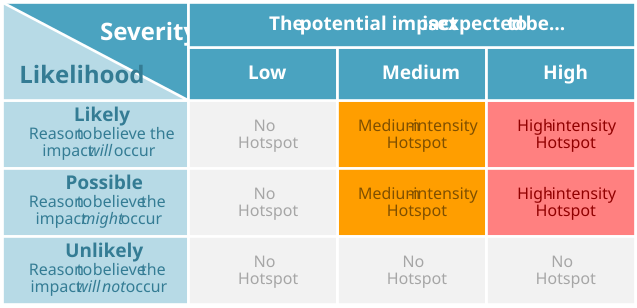

BE23: Finanzielle Vermögenswerte
Finanzielle Vermögenswerte behüten die Zukunftsfähigkeit
1. Ambition
Ein zukunftsfähiges Unternehmen setzt Investitionsrichtlinien und entsprechende interne Kontrollmechanismen um, die darauf abzielen, die Zukunftsfähigkeit sowohl der eigenen Finanzanlagen als auch derjenigen, die es im Auftrag von Drittvermögeneigentümern verwaltet oder kontrolliert, kontinuierlich zu verbessern.
1.1 Was dieses Ziel bedeutet
Viele Unternehmen halten oder verwalten Finanzanlagen (Beteiligungen, Schuldtitel, Bareinlagen bei Banken usw.) als Teil ihres Kerngeschäfts, als strategisches Unternehmensziel oder einfach als Möglichkeit, überschüssige Barmittel zu nutzen, bis sie für andere Zwecke benötigt werden. Der Erwerb und Handel mit Finanzanlagen versorgt das Beteiligungsunternehmen mit Kapital, damit es seine Aktivitäten fortsetzen oder erweiten kann.206 Jegliche positiven oder negativen Ergebnisse, die durch das Beteiligungsunternehmen verursacht werden, können durch das bereitgestellte Kapital aufrechterhalten oder verstärkt werden, sodass der Investor dafür mitverantwortlich ist.207
Dieses Ziel erfordert, dass ein Unternehmen interne Kontrollmechanismen einführt, die ihm helfen, die Zukunftsfähigkeit seiner Investitionen kontinuierlich zu maximieren, wobei ein besonderer Schwerpunkt auf der Vorhersage, Vermeidung und Bewältigung themenspezifischer Risikobereiche liegt.
Um zukunftsfähig zu sein, muss ein Unternehmen: (a) über Richtlinien und interne Kontrollen verfügen, die es ihm und seinen Mitarbeitenden ermöglichen, vorauszusehen, wo negative Investitionsauswirkungen wahrscheinlich sind; (b) sie nach Möglichkeit meiden; und (c) messbare Schritte unternehmen, um auftretende Bedenken auszuräumen.
1.2. Warum dieses Ziel erforderlich ist
Wie bei allen Future-Fit-Break-Even-Zielen muss ein Unternehmen dieses Ziel erreichen, um sicherzustellen, dass es nichts unternimmt, um den Fortschritt der Gesellschaft in Richtung einer ökologisch regenerativen, sozial gerechten und wirtschaftlich integrativen Zukunft zu untergraben. Weitere Informationen darüber, wie diese Ziele auf der Grundlage von mehr als 30 Jahren Systemwissenschaft abgeleitet wurden, finden Sie im Leitfaden zur Methodik.
Diese Statistiken veranschaulichen, warum es für alle Unternehmen von entscheidender Bedeutung ist, dieses Ziel zu erreichen:
Zwischen 60 und 80 % der Kohle-, Öl- und Gasreserven börsennotierter Unternehmen sind „unverbrennbar“, wenn die Welt eine Chance haben soll, die globale Erwärmung von 2 °C nicht zu überschreiten. Unternehmensbewertungen informieren Anleger:innen in der Regel nicht über ihr Engagement in diesen sogenannten gestrandeten Vermögenswerten, obwohl diese Reserven im Jahr 2012 einen Aktienwert von 4 Billionen US-Dollar unterstützten. [25]
Sowohl die Nachfrage nach nachhaltigen und verantwortungsvollen Anlagemöglichkeiten (Sustainable and Responsible Investment, SRI) als auch die Verfügbarkeit von Informationen über nichtfinanzielle Leistungen nehmen erheblich und kontinuierlich zu. Laut der europäischen SRI-Studie von Eurosif aus dem Jahr 2018 sind die Integrationsstrategien Umwelt-, Sozial- und Governance-Kriterien (ESG) in den letzten zwei Jahren um 60 % gewachsen und machen mehr als 4 Billionen Euro verwaltetes Vermögen aus. [149]
Um die SDGs zu erreichen, sind große Investitionen erforderlich. Während einige Initiativen öffentlich finanziert werden sollten, ist für den Erfolg auch eine erhebliche Investition privater Mittel von Privat- und Unternehmensinvestoren erforderlich. Die Handels- und Entwicklungskonferenz der Vereinten Nationen schätzt, dass in den Entwicklungsländern eine jährliche Investitionslücke von über 4 Billionen US-Dollar besteht. [150]
1.3 Wie dieses Ziel zu den SDGs beiträgt
Die UN-Ziele für nachhaltige Entwicklung (SDGs) sind eine kollektive Antwort auf die größten systemischen Herausforderungen der Welt und sind daher natürlich miteinander verbunden. Jede einzelne Maßnahme kann sich direkt auf einige SDGs und andere über Folgeeffekte auswirken. Ein zukunftsfähiges Unternehmen kann sicher sein, dass es den Fortschritt in Richtung der SDGs unterstützt – und ihn in keiner Weise behindert.
Unternehmen können dazu beitragen, den Fortschritt in Bezug auf alle SDGs voranzutreiben, indem sie sicherstellen, dass die von ihnen kontrollierten finanziellen Vermögenswerte das Streben nach Zukunftsfähigkeit nicht behindern. Die direktesten Verbindungen zu diesem Ziel hängen jedoch von den einzigartigen Merkmalen der Investitionen jedes Unternehmens ab.
2. Aktion
2.1 Erste Schritte
Hintergrundinformationen
Wie im methodischen Leitfaden, erläutert, trägt jedes Unternehmen eine Mitverantwortung für alle Auswirkungen, die über seine eigenen vier Wände hinausgehen, sofern diese Auswirkungen eine Folge der Existenz des Unternehmens sind.
In Bezug auf Investitionen bedeutet dies, nicht in Finanzanlagen zu investieren, die den Fortschritt der Gesellschaft auf dem Weg zur Zukunftsfähigkeit behindern.208 Dieses Ziel umfasst drei Eigentumsmodelle:
- Finanzielle Vermögenswerte im Besitz des Unternehmens.
- Finanzielle Vermögenswerte, die das Unternehmen im Auftrag Dritter verwaltet.
- Finanzielle Vermögenswerte, die Dritten als Produkte angeboten werden, ohne dass sie an der Verwaltung der Anlage selbst beteiligt sind.
Wenn ein Unternehmen in einen finanziellen Vermögenswert investiert – entweder im eigenen Namen oder für eine:n Dritteigentümer:in – oder die Investition als Produkt Dritten anbietet, entscheidet es sich effektiv dafür, (einen Teil der) Finanzierung für die damit verbundenen negativen Auswirkungen bereitzustellen mit diesem Vermögenswert. Die Unternehmen sind daher gemeinsam für die negativen Auswirkungen dieser Investition rechenschaftspflichtig.
Es ist komplex, die Auswirkungen eines einzelnen Unternehmens oder Projekts – und damit jedes damit verbundenen finanziellen Vermögenswerts – zu verstehen. Ein Unternehmen weiß möglicherweise nicht einmal genau, wo und wie sein Geld eingesetzt wird. Wenn Unternehmen jedoch nicht daran arbeiten, die Auswirkungen ihrer Finanzentscheidungen zu verstehen, laufen sie Gefahr, zu negativen Folgen beizutragen.
Allerdings führt die wachsende Nachfrage nach Informationen über die ökologischen und sozialen Auswirkungen von Investitionen zu größerer Transparenz und Verfügbarkeit von Informationen. Die vollständige Integration von Daten zur Zukunftsfähigkeit in den Ansatz des Unternehmens in Bezug auf Finanzanlagen sollte daher ein langfristiges Ziel sein.
Fragen, die man stellen sollte
Mithilfe dieser Fragen können Sie ermitteln, welche Informationen Sie sammeln müssen.
Gehören Finanzanlagen zum Kerngeschäft des Unternehmens?
- Verwaltet das Unternehmen finanzielle Vermögenswerte im eigenen Namen oder für andere Organisationen oder Einzelpersonen? Verkauft es finanzielle Vermögenswerte als Produkte? Gewährt es anderen Organisationen oder Einzelpersonen Kredite? Inwieweit hat das Unternehmen Einblick darin, wo seine Finanzanlagen angelegt sind?
- Zahlt das Unternehmen im Namen seiner Mitarbeiter:innen in eine Pensionskasse ein? Hat es Einblick in die Art und Weise, wie das Geld in diesem Fonds investiert wird und inwieweit die Anlagestrategie dieses Fonds mit den eigenen Werten des Unternehmens übereinstimmt?
Was sind die Investitionsziele des Unternehmens?
- Was sind die vorrangigen Ziele des Unternehmens bei der Anlage von Kapital in Finanzanlagen? Strebt es die Maximierung der finanziellen Rendite, die Minimierung des Risikos oder die Sicherung der Liquidität an?
- Hat das Unternehmen in Bezug auf seine finanziellen Vermögenswerte explizite soziale oder ökologische Ziele?
- Hat das Unternehmen eine erklärte Verpflichtung, die SDGs zu unterstützen? Wenn ja, wurde dieses Engagement in die Investitionskriterien des Unternehmens integriert?
Wie verwaltet das Unternehmen seine finanziellen Vermögenswerte?
- Verfügt das Unternehmen über explizite Richtlinien und interne Kontrollen in Bezug auf Finanzanlagen? Werden diese aktiv und regelmäßig überprüft? Wer ist für die Überwachung und Sicherstellung ihrer Wirksamkeit verantwortlich? Wurden soziale und ökologische Kriterien darin integriert?
- Werden die eigenen Investitionen des Unternehmens oder die seiner Kunden von Dritten verwaltet? Wenn ja, welche Anlageparameter werden den Verwaltern dieser Vermögenswerte mitgeteilt, und umfassen diese bestimmte soziale oder ökologische Ziele? Berichten die bestehenden Manager über alle nichtfinanziellen Elemente ihrer Investitionen? Wie werden die Führungskräfte anhand ihrer Leistung bewertet und belohnt?
- Wie geht das Unternehmen mit Stimmrechten um? Beteiligt es sich an Aktionärsgesprächen oder lässt es seine Interessen vertreten? Hat das Unternehmen seine diesbezüglichen Ziele offiziell dokumentiert? Üben Manager Eigentums- und Stimmrechte im Namen des Unternehmens im Einklang mit den Future-Fit-Zielen aus?
Wie man Prioritäten festlegt
Diese Fragen sollen Ihnen dabei helfen, Verbesserungsmaßnahmen zu identifizieren und zu priorisieren.
Wo könnte das Unternehmen mit seinen Finanzanlagen die größte Wirkung erzielen?
- In welche Arten von Finanzanlagen hat das Unternehmen die größten Kapitalbeträge investiert? Geringfügige Änderungen bei der Verwaltung dieser Anlagen könnten relativ große Auswirkungen haben.
Welche potenziellen Verbesserungen wären am einfachsten umzusetzen?
- Für welche Anlageklassen oder Kapitalpools wäre es am einfachsten, Future-Fit-Ziele zu integrieren? Welche Risikoprofile oder erklärten Anlageziele stimmen am ehesten mit den Future-Fit-Anforderungen überein?
- Gibt es Möglichkeiten, auf Instrumente mit ähnlichen Risikoprofilen und Wachstumspotenzial umzusteigen, die auch soziale oder ökologische Aspekte berücksichtigen?
Könnte das Unternehmen Möglichkeiten finden, die Anforderungen dieses Ziels zu übertreffen?
- Ist das Unternehmen über das zur Erreichung dieses Ziels erforderliche Maß hinaus in der Lage, etwas zu tun, um sicherzustellen, dass soziale Normen, globale Governance und Wirtschaftswachstum das Streben nach Zukunftsfähigkeit vorantreiben?209 Jede derartige Maßnahme kann den gesellschaftlichen Fortschritt in Richtung Zukunftsfähigkeit beschleunigen. Weitere Einzelheiten finden Sie im Positive Pursuit Guide.
Im nächsten Abschnitt werden die Fitnesskriterien beschrieben, anhand derer festgestellt werden kann, ob eine bestimmte Maßnahme zu Fortschritten in Richtung Zukunftsfähigkeit führt.
2.2 Zukunftsfähigkeit anstreben
Einführung
Um zukunftsfähig zu sein, muss ein Unternehmen über interne Kontrollen verfügen, die es ihm und seinen Mitarbeitenden ermöglichen, finanzielle Vermögenswerte zu bewerten, um mögliche negative Auswirkungen zu erkennen. Darüber hinaus müssen Richtlinien umgesetzt werden, um diese Auswirkungen nach Möglichkeit zu vermeiden, und es müssen Maßnahmen ergriffen werden, um alle Auswirkungen anzugehen, die sich nicht vermeiden lassen.
Leitlinien zur Durchführung von Brennpunkt-Bewertungen
Um den negativen Auswirkungen vorzubeugen, zu denen Investitionen – wenn auch unbeabsichtigt – beitragen könnten, sollten alle Investitionen einer Brennpunkt-Bewertung unterzogen werden, um alle Aktivitäten zu identifizieren, die den Fortschritt in Richtung der 8 Merkmale einer zukunftsfähigen Gesellschaft untergraben könnten, nämlich:210
- Energie ist erneuerbar und für alle verfügbar.
- Wasser stammt aus verantwortungsvollen Quellen und ist für alle verfügbar.
- natürliche Ressourcen werden so bewirtschaftet, dass Gemeinschaften, Tiere und Ökosysteme geschützt werden;
- Die Umwelt ist frei von Verschmutzung;
- es gibt keinen Abfall;
- Unsere physische Präsenz schützt die Gesundheit von Ökosystemen und Gemeinschaften;
- Menschen haben die Fähigkeit und die Möglichkeit, ein erfülltes Leben zu führen; Und
- Soziale Normen, globale Governance und Wirtschaftswachstum treiben das Streben nach Zukunftsfähigkeit voran.
Abbildung 1 enthält eine Liste häufig auftretender Aspekte, die in den einzelnen Bereichen zu berücksichtigen sind. Besondere Aufmerksamkeit sollte den Auswirkungen gewidmet werden, deren Eintreten aufgrund branchenspezifischer, geografischer und ressourcenspezifischer Risiken wahrscheinlicher ist. Unterstützen die Vermögenswerte beispielsweise die Finanzierung von:
- Projekten, bei denen ein sehr wasserintensiver landwirtschaftlicher Produktionsprozess in einer Region mit Wasserknappheit zum Einsatz kommt?
- Unternehmen, die 24-Stunden-Kundendienstfunktionen in Länder auslagern, in denen der gesetzliche Schutz der Arbeitnehmerrechte begrenzt ist?
- Fonds, die in Ressourcen wie Zellstoff oder Palmöl investieren, die zur Abholzung der Wälder beitragen können, wenn sie aus nicht zertifizierten Quellen stammen?
Ressourcen für die Brennpunkt-Bewertung
Unternehmen sollten Informationen von staatlichen und branchenbezogenen Stellen sowie ihre eigenen Sekundärrecherchen nutzen. Bei physischen Produkten können Datenbanken zur Ökobilanz (Life-Cycle-Assessment, LCA) hilfreich sein. Für soziale Auswirkungen ist die Social Hotspot Database ein guter Ausgangspunkt, ebenso wie OpenLCA für Umweltauswirkungen.
Bewertungen für Finanzanlagen im Besitz des Unternehmens:
Für alle finanziellen Vermögenswerte, die das Unternehmen besitzt, sollte das Unternehmen Folgendes anstreben:
- Identifizieren Sie genau, wie das Kapital eingesetzt wurde (z. B. durch Bankeinlagen, Direktinvestitionen, Fonds usw.);
- Bestimmen Sie die Endempfänger:in jeder Investition (z. B. die Unternehmen, aus denen ein Fonds besteht); Und,
- Prüfen Sie, welche negativen Auswirkungen aufgrund dieser Investitionen nach vernünftigen Ermessen zu erwarten sind.
Beachten Sie, dass bei vielen Anlagevehikeln unklar ist, wo sie investieren. Ohne diese Informationen können Vermögenseigentümer:innen jedoch nicht sicher sein, dass sie nicht zu negativen Auswirkungen beitragen.
Abbildung 1: Eine Liste häufiger Brennpunkt-Aspekte nach betroffenen Bereichen.
| Themenbereich | häufig auftretende Brennpunkte |
|---|---|
| Energie | Energieintensive Prozesse, die voraussichtlich: - auf nicht erneuerbare Energiequellen angewiesen sind - andere daran hindern, ihren Energiebedarf zu decken |
| Wasser | Wasserintensive Prozesse, bei denen davon auszugehen ist, dass sie: - auf Wasser aus wasserarmen Quellen angewiesen sind - andere daran hindern, ihren Wasserbedarf zu decken |
| Natürliche Ressourcen | Die Abhängigkeit von natürlichen Ressourcen, deren Gewinnung zu Folgendem beiträgt: - Verlust der biologischen Vielfalt - Erschöpfung erneuerbarer Ressourcen - Bewaffnete Konflikte - Misshandlung von Tieren - Physische Schädigung der Umwelt - Umwidmung landwirtschaftlicher Nutzflächen für die Energiegewinnung |
| Verschmutzung: Treibhausgase | Treibhausgasintensive Prozesse |
| Verschmutzung: Sonstige schädliche Emissionen | Schädliche Emissionen in Luft, Boden und Wasser, darunter: - Gasförmige Giftstoffe und Luftschadstoffe (z. B. VOCs, NOx) - Ozonabbauende Stoffe - Stoffe, die sich in der Natur anreichern - Seltene Metalle (z. B. Cadmium und Blei) - Unbehandeltes oder unzureichend behandeltes Abwasser - Schädliche Chemikalien (z. B. Düngemittelauswaschungen, schädliche Pestizide) |
| Abfall | Prozesse, bei denen große Mengen an Abfall anfallen |
| Physische Präsenz | Schädliche Landnutzung, darunter: - Eingriffe in Gebiete, die für lokale Gemeinschaften von Bedeutung sind - Umwandlung unberührter Ökosysteme (z. B. Umwandlung von Primärwäldern und Feuchtgebieten) - Missachtung der Rechte lokaler Gemeinschaften (z. B. Landraub) |
| Menschen | Mangelhafte Arbeitspraktiken, darunter: - Kinderarbeit - Übermäßige Überstunden - Zwangsarbeit - Gefährliche Arbeitsbedingungen - Verantwortungsloser Einsatz von Leiharbeitenden - Unterbezahlung oder Nichtzahlung von Löhnen und Sozialleistungen - Nicht offengelegte Vergabe von Unteraufträgen - Diskriminierende Praktiken - Fehlende Arbeitnehmervertretung (z. B. das Recht auf Tarifverhandlungen) |
| Treibende Faktoren | Betriebliche Aktivitäten, die durch unethisches Geschäftsgebaren (z. B. Bestechung) motiviert sind |
Bewertungen für Finanzanlagen, die das Unternehmen im Auftrag Dritter verwaltet:
Für alle von ihm verwalteten finanziellen Vermögenswerte sollte das Unternehmen Folgendes anstreben:
- Bestimmen Sie die Endempfänger:in jeder Investition (z. B. die Unternehmen, aus denen ein Fonds besteht); Und,
- Prüfen Sie, welche negativen Auswirkungen aufgrund dieser Investitionen nach vernünftigen Ermessen zu erwarten sind.
Bewertungen für als Produkte angebotene finanzielle Vermögenswerte:
Für alle als Produkte angebotenen finanziellen Vermögenswerte sollte das Unternehmen Folgendes anstreben:
- Identifizieren Sie genau, wie das Kapital in jedem Produkt eingesetzt wurde;
- Bestimmen Sie die Endempfänger:in jeder zugrunde liegenden Investition (z. B. die konstituierenden Unternehmen innerhalb eines Fonds); Und,
- Prüfen Sie, welche negativen Auswirkungen aufgrund dieser Investitionen nach vernünftigen Ermessen zu erwarten sind.
Leitlinien zur Kategorisierung von Brennpunkten
Um Maßnahmen in Bezug auf jeden Brennpunkt zu priorisieren, sollte ein Unternehmen sowohl die Wahrscheinlichkeit des Auftretens einer negativen Auswirkung als auch die Schwere der Folgen prüfen, wenn sie tatsächlich eintreten. Jede Auswirkung mittlerer bis hoher Schwere sollte als Brennpunkt betrachtet werden, es sei denn, es gibt triftige Gründe zu der Annahme, dass die Auswirkung nicht eintreten wird (siehe Abbildung 2).
Abbildung 2: Leitlinien zur Ermittlung der Intensität von Brennpunkten unter Berücksichtigung von Wahrscheinlichkeit und Schweregrad. Probleme im oberen rechten Bereich der Matrix verdienen die größte Aufmerksamkeit.211

Leitlinien zum Handeln bei Brennpunkten
Ein Unternehmen muss sicherstellen, dass es wirksame und substanzielle Maßnahmen ergreift, um Brennpunkte zu vermeiden und zu bewältigen. Dies erfordert die Umsetzung eines Ansatzes nach dem Motto Kein Nutzen, keine Ausreden, Verpflichtung zur Reduzierung, wie folgt:
Kein Nutzen…
Unternehmen müssen sich verpflichten, alle Finanzanlagen zu prüfen, zu meiden und, soweit möglich, ihre bestehenden Beteiligungen daran abzubauen, bei denen das Kerngeschäftsmodell des Beteiligungsunternehmens davon abhängt oder untrennbar damit verbunden ist, Ergebnisse zu fördern, die den Fortschritt der Gesellschaft in Richtung Zukunftsfähigkeit von Grund auf untergraben. Dies betrifft Produkte oder Dienstleistungen, bei denen eine wahrscheinliche, vorhersehbare und anhaltende Folge des Kerngeschäftsmodells darin besteht, einen Verstoß gegen eine oder mehrere Systembedingungen zu verursachen oder zu verlängern212 - und die durch keine noch so umfassende Neugestaltung der Produkte/Dienstleistungen oder Engagementmaßnahmen verhindert werden können.
Beispiele hierfür sind:
- Finanzielle Vermögenswerte, deren Kerngeschäftsmodell von der physischen Schädigung der Umwelt abhängt oder untrennbar damit verbunden ist (z. B. Unternehmen, die Tagebau betreiben, Fischerei mit Grundschleppnetzen).
- Finanzielle Vermögenswerte, deren Kerngeschäftsmodell von Umweltverschmutzung abhängt oder untrennbar damit verbunden ist (z. B. Kohlekraftwerke).
- Finanzielle Vermögenswerte, deren Kerngeschäftsmodell davon abhängt oder untrennbar mit der Gefährdung von Menschen verbunden ist (z. B. Hersteller von Landminen, Zigarettenhersteller).
Unternehmen sollten außerdem bedingte Überprüfungskriterien für Themen festlegen, die bekanntermaßen besonders problematisch sind (z. B. Palmöl, dessen Produktion oft mit der Abholzung von Wäldern verbunden ist) und nur dort investieren, wo diese Probleme angegangen werden (z. B. RSPO-zertifiziertes Palmöl213). [151]
Keine Ausreden…
Schwierigkeiten bei der Beschaffung von Informationen über Investitionen entbinden das Unternehmen nicht von seiner gegenseitigen Rechenschaftspflicht hinsichtlich der Auswirkungen der Fitness dieser Investitionen. Wenn eine Bewertung der Fitness eines Beteiligungsunternehmens theoretisch möglich ist, muss dieser Schritt unternommen werden, auch wenn er schwierig ist. Beispiele hierfür sind:
- Wenn Manager Finanzanlagen kaufen und verkaufen, wenn sich Gelegenheiten ergeben, sodass das Unternehmen regelmäßig zahlreiche Transaktionen bewerten müsste, um deren Fitness zu beurteilen.
- Hochfrequenzhandelsstrategien – insbesondere algorithmische oder vollautomatische – bei denen mehrere Vermögenswerte auf der Grundlage statistischer Daten gehandelt werden, unabhängig von der Art der zugrunde liegenden Geschäfte, was es äußerst schwierig macht, ein genaues Bild davon zu erstellen, welche Beteiligungsunternehmen ein Investor tatsächlich finanziert Zeitpunkt.
- Investition in ein privat geführtes Unternehmen, das sich weigert, seinen Aktionären Informationen zur Fitness der Investition zur Verfügung zu stellen.
Während Unternehmen die Verwendung von Kapital bei Investitionen in Unternehmen oder projektbasierter Finanzierung nach vernünftigen Ermessen vorhersehen können, sind Unternehmen aufgrund der Merkmale einiger anderer Arten von Finanzanlagen nicht in der Lage, die Fitness ihrer Investitionen zu beurteilen. Beispielsweise unterliegen Privatkredite wie Kreditlinien, Überziehungskredite, Kurzzeitkredite, Kreditkarten oder Hypotheken, die einem einzelnen Kreditnehmer gewährt werden, in der Regel keiner Meldepflicht, und Informationen über die Verwendung dieses Kapitals werden häufig durch Verbraucherschutzgesetze angemessen geschützt. In diesen Fällen gelten die Unternehmen nicht gegenseitig für die Fitness dieser finanziellen Vermögenswerte rechenschaftspflichtig.
Verpflichtung zur Reduzierung…
Wurde eine nicht konforme Anlage identifiziert und ist eine Substitution nicht sofort möglich (z. B. aufgrund von Marktilliquidität oder weil der Investor sich mitten in einer mehrjährigen Verpflichtung im Rahmen einer Kommanditgesellschaft befindet), muss das Unternehmen versuchen, deren Auswirkungen durch andere Mittel zu mindern. Dies kann Folgendes umfassen:
- Den Dialog mit dem Manager oder dem zugrunde liegenden Beteiligungsunternehmen – entweder direkt oder über spezialisierte Dienstleister – suchen, um eine stärkere Ausrichtung auf die „Future-Fit“-Anforderungen zu fördern.
- Sicherstellen, dass Erträge oder zurückgegebenes Kapital nicht in dasselbe nicht konforme Beteiligungsunternehmen reinvestiert werden.
Darüber hinaus sollten Unternehmen, sofern alternative Finanzanlagen vorhanden sind, die besser auf die Zukunftsfähigkeit ausgerichtet sind und das erforderliche Risiko-Rendite-Profil aufweisen, eine Umstellung auf diese anstreben. Beispiele hierfür sind:
- Investieren Sie in einen Green-Bond-Fonds im Gegensatz zu einem herkömmlichen Rentenfonds.
- Investition in einen ethisch geprüften oder kohlenstoffarmen Aktienindexfonds im Gegensatz zu einem herkömmlichen Aktienindexfonds.
- Investition in einen aktiven, auf Nachhaltigkeit ausgerichteten thematischen börsennotierten Aktienfonds, im Gegensatz zu einem aktiven, sektororientierten börsennotierten Aktienfonds.
- Investition in einen Private-Equity-Fonds, der neue saubere Energietechnologien unterstützt, im Gegensatz zu einem uneingeschränkten Private-Equity-Fonds.
Fitnesskriterien
Das Unternehmen muss sicherstellen, dass alle Brennpunkte identifiziert und einheitlich sowie im Einklang mit dem oben beschriebenen Ansatz Kein Nutzen, Keine Ausreden, Verpflichtung zur Reduzierung behandelt werden.
Darüber hinaus muss jeder Finanzwert, der sich im Besitz des Unternehmens befindet, von diesem verwaltet oder als Produkt angeboten wird, den nachstehend beschriebenen Überprüfungsverfahren und Maßnahmen zur Verbesserung der Fitnessergebnisse unterzogen werden.
- Das Unternehmen muss für jeden Finanzwert eine Brennpunkt-Bewertung durchführen durchführen, die Folgendes gewährleistet:
- Die Identifizierung von Brennpunkten für jeden Problembereich (siehe Abbildung 1).
- Eine Bewertung der Intensität der Brennpunkten (siehe Abbildung 2).
- Eine fundierte Priorisierung, welche Auswirkungen zuerst angegangen werden sollten.
- Wenn ein Hotspot identifiziert wurde, muss er durch Maßnahmen im Einklang mit dem Ansatz Kein Nutzen, keine Ausreden, Verpflichtung zur Reduzierung angegangen werden.
Wie oft sollten Brennpunkt-Bewertungen durchgeführt werden?
Bei ausreichender Zeit sollte es einem Unternehmen gelingen, die gravierendsten Brennpunkte aus seinen Investitionen zu beseitigen, doch dies ist kein Grund zur Selbstzufriedenheit. Investitionen sind eine dynamische Angelegenheit, sodass regelmäßig neue Probleme auftreten können und auch weniger problematische Auswirkungen weiterhin angegangen werden müssen. Aus diesem Grund sollten Brennpunkt-Bewertungen als iterativer und fortlaufender Prozess betrachtet werden.
In der Praxis sollten Brennpunkt-Bewertungen regelmäßig überprüft und aktualisiert werden, oder wenn sich die Herkunft bestimmter Investitionen erheblich ändert.
3. Bewertung
3.1 Fortschrittsindikatoren
Die Rolle von Future-Fit-Fortschrittsindikatoren besteht darin, anzuzeigen, wie weit ein Unternehmen auf dem Weg zum Erreichen eines bestimmten Ziels ist. Fortschrittsindikatoren werden als einfache Prozentsätze ausgedrückt.
Ein Unternehmen sollte stets bestrebt sein, seine Zukunftsfähigkeit über alle seine Aktivitäten hinweg zu bewerten. Unter bestimmten Umständen ist dies möglicherweise nicht möglich. In solchen Fällen lesen Sie bitte den Abschnitt Bewertung und Berichterstattung mit unvollständigen Daten im ** Implementierungsleitfaden**.
Fortschrittsbewertung
Dieses Ziel umfasst neun Fortschrittsindikatoren, die den in Abbildung 2, identifizierten spezifischen Themenbereichen entsprechen, nämlich: Energie, Wasser, natürliche Ressourcen, Treibhausgasemissionen, Schadstoffemissionen, Abfall, physische Präsenz, Menschen und Treibenden Faktoren. Zur Berechnung des Fortschritts sind folgende Schritte erforderlich:
Für jeden der neun Themenbereiche:
- Bewerten Sie die Fitness jedes einzelnen finanziellen Vermögenswert, der zu einem beliebigen Zeitpunkt während des Berichtszeitraums gehalten wurde, gemäß den nachstehenden Leitlinien.
- Bestimmen Sie, wie viele Tage jeder Vermögenswert während des Berichtszeitraums gehalten wurde.
- Berechnen Sie den Fortschritt als zeit- und wertgewichtete Summe der Fitnesswerte aller Vermögenswerte.
Beurteilung der Fitness eines finanziellen Vermögenswerts
Das Unternehmen muss jeden finanziellen Vermögenswert wie in Abbildung 3 beschrieben bewerten.
Abbildung 3: So bewerten Sie die Fitness von Finanzanlagen.
| Fitness-Wert | Fitness-Kriterien |
|---|---|
| 0 % | - Es wurde keine Brennpunkt-Bewertung durchgeführt oder or - Der Finanzwert fällt unter die Kategorie Kein Nutzen des Ansatzes Kein Nutzen, keine Ausreden, Verpflichtung zur Reduzierung |
| 25 % | - Es wurde eine angemessene Brennpunkt-Bewertung durchgeführt - Die Bewertung ergab, dass potenzielle Brennpunkt bestehen könnten - Es wurden keine weiteren Maßnahmen ergriffen Hinweis: Wenn die Analyse bestätigt, dass keine potenziellen Hotspots vorliegen, überprüfen Sie die Kriterien für eine Bewertung von 100 % (siehe unten) |
| 50 % | - Es wurde eine detaillierte Analyse aller potenziellen Brennpunkten durchgeführt - Die Analyse bestätigt, dass tatsächlich Brennpunkte vorhanden sind - Es werden Maßnahmen ergriffen, um die identifizierten Brennpunkte zu beheben Hinweis: Wenn die Analyse bestätigt, dass keine tatsächlichen Brennpunkte vorhanden sind, überprüfen Sie die Kriterien für eine Bewertung von 100 % (siehe unten) |
| 75 % | - Alle kritische Brennpunkte wurden behoben - Das Unternehmen ergreift geeignete Maßnahmen zur Behebung der verbleibenden Brennpunkten im Einklang mit dem Ansatz Kein Nutzen, keine Ausreden, Verpflichtung zur Reduzierung |
| 100 % | - Alle Brennpunkte wurden vermieden oder beseitigt |
Berechnung des Unternehmensfortschritts für einen bestimmten Themenbereich
Der aggregierte „Future-Fit“-Fortschritt des Unternehmens in Bezug auf den Themenbereich „X“ (für jeden in Abbildung 2) dargestellten Themenbereich) ist die zeit- und wertgewichtete Summe der „Future-Fit“-Werte aller finanziellen Vermögenswerte.
Dies kann mathematisch ausgedrückt werden als:
\[F^X=\frac{\sum_{i=1}^If_i^X*C_i*D_i}{\sum_{i=1}^IC_i*D_i}\] Wo:
| \[F^{X}\] | ist der Fortschritt in Richtung Zukunftsfähigkeit für den Themenbereich X, ausgedrückt in Prozent. |
| \[X\] | ist der Themenbereich: Energie, Wasser, Natürliche Ressourcen, Treibhausgasemissionen, Schadstoffemissionen, Abfall, Physische Präsenz, Menschen oder Treibende Faktoren. |
| \[f_{i}^{X}\] | ist die Zukunftsfähigkeit des Finanzvermögenswerts i. |
| \[C_{i}\] | ist der Geldwert des Finanzvermögenswerts i.214 |
| \[D_{i}\] | ist die Anzahl der Tage, an denen der Finanzvermögenswert i während des Berichtszeitraums gehalten wurde. |
| \[I\] | ist die Gesamtzahl der Finanzvermögenswerte im Portfolio des Unternehmens. |
Ein Beispiel dafür, wie dieser Fortschrittsindikator berechnet werden kann, finden Sie hier.
3.2 Kontextindikatoren
Die Kontextindikatoren dienen dazu, den Interessengruppen die zusätzlichen Informationen zur Verfügung zu stellen, die erforderlich sind, um das gesamte Ausmaß der Fortschritte eines Unternehmens zu beurteilen.
Gesamtes verwaltetes Vermögen
Das Unternehmen muss den Gesamtwert der verwalteten Vermögenswerte angeben, die während des Berichtszeitraums gehalten, kontrolliert und/oder angeboten wurden.215
Anspruchsvolle Brennpunkte
Eine kurze Beschreibung aller besonders kritischen Brennpunkte, die im Berichtszeitraum nicht vollständig angegangen wurden, sowie für jeden einzelnen:
- Eine kurze Beschreibung des Brennpunkts.
- Bisher ergriffene Maßnahmen zur Vermeidung oder Behebung von Brennpunkten.
- Gegebenenfalls geplante zusätzliche Maßnahmen.
Ein Beispiel dafür, wie Kontextindikatoren berichtet werden können, finden Sie hier.
4. Zuverlässigkeitserklärung
4.1. Wozu eine Zuverlässigkeitserklärung dient und warum sie wichtig ist
Jedes Unternehmen, das Zukunftsfähigkeit anstrebt, wird bei seinen wichtigsten Stakeholdern (vom CEO und CFO bis hin zu externen Investoren) mehr Vertrauen schaffen, wenn es die Qualität seiner Zukunftsfähigkeitsdaten und die Robustheit der zugrunde liegenden Kontrollen nachweisen kann.
Dies ist besonders wichtig, wenn ein Unternehmen öffentlich über seine Fortschritte in Richtung Zukunftsfähigkeit berichten möchte, da einige Unternehmen vor der Veröffentlichung möglicherweise eine unabhängige Prüfung benötigen. Durch wirksame, gut dokumentierte Kontrollmechanismen kann ein Unternehmen unabhängigen Prüfenden helfen, schnell zu verstehen, wie das Unternehmen funktioniert, und sie so dabei unterstützen, eine Zuverlässigkeitserklärung zu geben und/oder Verbesserungen zu empfehlen.
4.2 Empfehlungen für dieses Ziel
Die folgenden Punkte heben Bereiche hervor, die im Hinblick auf dieses spezifische Ziel besondere Aufmerksamkeit erfordern. Da jedes Unternehmen und jeder Berichtszeitraum einzigartig sind, variieren Prüfungsaufträge immer: In jeder Situation können die Prüfer:innen versuchen, verschiedene Kontrollmechanismen und dokumentierte Nachweise zu bewerten. Die Nutzer:innen sollten diese Empfehlungen daher als eine illustrative Liste dessen betrachten, was angefordert werden kann, und nicht als eine erschöpfende Liste dessen, was erforderlich sein wird.
- Dokumentieren Sie die Methoden und die Häufigkeit, mit der das Unternehmen seine Investitionen bewertet. Dies kann den Prüfern dabei helfen, zu beurteilen, ob der Ansatz des Unternehmens voraussichtlich ausreicht, um alle Brennpunkte zu identifizieren.
- Dokumentieren Sie die Methode, mit der festgestellt wird, ob finanzielle Vermögenswerte dem Ansatz Kein Nutzen, keine Ausreden, Verpflichtung zur Reduzierung entsprechen. Dies kann den Prüfern helfen zu beurteilen, ob der Ansatz des Unternehmens mit den Anforderungen dieses Ziels übereinstimmt.
- In Fällen, in denen das Unternehmen beschlossen hat, weiterhin finanzielle Vermögenswerte zu halten, die als „kritischer Brennpunkt“ eingestuft sind, dokumentieren Sie die Methoden, die das Unternehmen verwendet, um mit dem Manager des finanziellen Vermögenswerts, in den es investiert hat, oder mit dem zugrunde liegenden Beteiligungsunternehmen selbst zusammenzuarbeiten, um Anreize zu schaffen ihnen, ihre Fitness im Laufe der Zeit zu steigern. Dies kann den Prüfern dabei helfen, zu kontrollieren, ob der vom Unternehmen gewählte Ansatz mit den Anforderungen des Ziels übereinstimmt.
- Bewahren Sie alle Arbeitsnotizen oder Informationen auf, die für die Berechnung des Fortschrittsindikators verwendet wurden, einschließlich Unterstützung für die Bewertung einzelner finanzieller Vermögenswerte oder gegebenenfalls Gruppen von Vermögenswerten sowie Nachweise über den Vermögenswert und die Zeit, die während des Berichtszeitraums für die Gewichtungsberechnung aufbewahrt wurden. Die Prüfer:innen können diese Informationen verwenden, um die Genauigkeit des berechneten Indikators zu kontrollieren.
Eine allgemeinere Erläuterung zur Gestaltung und Dokumentation interner Kontrollen finden Sie im Abschnitt Zukunftsfitness systematisch anstreben im Implementierungsleitfaden.
5. Zusätzliche Informationen
5.1 Beispiel
ACME Inc. verkauft Limonadenprodukte und hat erhebliche finanzielle Rücklagen angesammelt, die in verschiedene Arten von Finanzanlagen investiert wurden.
ACME beschließt, eine erste Bestandsaufnahme durchzuführen, um potenzielle Brennpunkte für Treibhausgasemissionen in seinen Finanzanlagen zu identifizieren.
ACME Inc. hatte zu Beginn des Berichtszeitraums 100.000 US-Dollar bei der Ethical Bank hinterlegt. Die Ethical Bank verfügt über umfassende Kontrollmechanismen, um sicherzustellen, dass sie Kredite nur an Unternehmen vergibt, die sich aktiv für das Streben nach Zukunftsfähigkeit einsetzen. Diese Kontrollen haben bedeutende Treibhausgasemittenten wirksam aussortiert, und da keine Brennpunkte bestehen, gilt die Einlage als zu 100 % zukunftsfähig.
Zur Mitte des Berichtszeitraums erhält das Unternehmen 50.000 $ und beschließt, diese in einen indexgebundenen Aktienfonds zu investieren. Der Fondsmanager gibt an, dass er die im Fonds enthaltenen Unternehmen überprüft und eine Reihe potenzieller Probleme identifiziert hat, jedoch keine Maßnahmen dagegen ergreift. Der Fonds gilt daher als zu 25 % zukunftsfähig.
Fortschrittsindikatoren
Das Unternehmen kann seinen Fortschritt nun wie folgt berechnen:
\[F^{GHGs}=\frac{\sum_{i=1}^If_i^{GHGs}*C_i*D_i}{\sum_{i=1}^IC_i*D_i}\]
\[=\frac{100\%*100,000*365+25\%*50,000*182}{100,000*365+50,000*182}\approx85\%\]
\[F^{Energie}=F^{Wasser}=F^{Natürliche Ressourcen}=F^{Treibhausgasemissionen}=F^{Abfall}=F^{Physische Präsenz}\]
\[=F^{Menschen}=F^{Treibende Faktoren}=0\%\]
Kontextindikatoren
Gesamtverwaltetes Vermögen im Berichtszeitraum: 150.000 $.
Anspruchsvolle Brennpunkte: Es wurden mehrere kritische Brennpunkte identifiziert:
- Engagement bei mehreren Öl- und Gasförderunternehmen.
- Engagement in einem Zementhersteller.
Durchgeführte Schritte: Es wurden keine Maßnahmen ergriffen.
5.3 Nützliche Links
Die Grundsätze für verantwortungsvolles Investieren (PRI)
Im Jahr 2005 berief die UNO die PRI als eine Gruppe der weltweit größten institutionellen Investoren ein, um eine Reihe von Grundsätzen für verantwortungsbewusstes Investieren zu entwickeln. Die Gruppe ist der Ansicht, dass ein wirtschaftlich effizientes, nachhaltiges Finanzsystem eine Voraussetzung für langfristige Wertschöpfung ist. Die sechs von der Gruppe formulierten Grundsätze sind freiwillige, anstrebenwerte Investitionsrichtlinien, die ein breites Spektrum möglicher Maßnahmen zur Einbeziehung von Umwelt-, Sozial- und Governance-Faktoren (ESG) in die Investitionspraxis bieten. Die Prinzipien wurden von Investoren für Investoren entwickelt, in der Hoffnung, ein nachhaltigeres globales Finanzsystem zu schaffen. Im April 2018 gab es mehr als 1.950 Unterzeichner:innen aus über 50 Ländern, die ein verwaltetes Vermögen von über 80 Billionen US-Dollar repräsentieren.
Umweltprogramm der Vereinten Nationen – Finanzinitiative (UNEP FI)
Die UNEP FI ist eine Partnerschaft zwischen dem Umweltprogramm der Vereinten Nationen und dem globalen Finanzsektor, die im Rahmen des Erdgipfels 1992 ins Leben gerufen wurde und deren Aufgabe darin besteht, nachhaltige Finanzierungen zu fördern. Über 200 Finanzinstitute, darunter Banken, Versicherungen und Investoren, arbeiten mit dem UNEP zusammen, um die aktuellen ökologischen Herausforderungen zu verstehen, zu erkennen, warum diese für die Finanzwelt von Bedeutung sind, und um herauszufinden, wie sie aktiv zu deren Bewältigung beitragen können.
UNEP FI hat Untersuchungen durchgeführt und anschließend seine Ergebnisse zur Debatte darüber veröffentlicht, ob die Treuepflicht ein legitimes Hindernis für Investoren darstellt, Umwelt-, Sozial- und Governance-Themen in ihre Anlageprozesse zu integrieren. Der hier, verfügbare Bericht ist nützlich, um Diskussionen darüber anzuregen, wie die Treuepflicht und das Streben nach Zukunftsfähigkeit zusammenwirken.
Divest-Invest
Divest-Invest ist ein vielfältiges, globales Netzwerk von Einzelpersonen und Organisationen, die in der Überzeugung vereint sind, dass sie durch den Einsatz ihres kollektiven Einflusses als Investoren – indem sie sich aus fossilen Brennstoffen zurückziehen und in Klimalösungen investieren – den Übergang zu einer CO2-freien Wirtschaft beschleunigen können. Auf diese Weise unterstützen sie das von den Regierungen in Paris auf der COP21 geschlossene Abkommen und sichern ihre eigenen Investitionsrenditen. Bis Januar 2019 hat die Bewegung Verpflichtungen in Höhe von 7,2 Billionen US-Dollar mobilisiert.
Triodos Bank
Die Triodos Bank ist ein führender Experte für nachhaltiges Bankwesen mit dem Ziel, Geld für positive Veränderungen einzusetzen. Die Bank hat eine Reihe von Geschäftsgrundsätzen und Kreditvergabekriterien festgelegt, die klar definieren, wie ihre Mitarbeiter:innen die wirtschaftlichen Qualitäten potenzieller Investitionsmöglichkeiten und Kreditverträge bewerten und feststellen können, ob diese mit der Mission und Vision des Unternehmens im Einklang stehen. Diese kommen unter anderem in einer Liste von Mindestanforderungen und Ausschlusskriterien zum Ausdruck, die die Standards festlegen, die erfüllt sein müssen, bevor eine weitere Bewertung der potenziellen Investition oder des Kreditvertrags gerechtfertigt ist. Triodos nennt Branchen und Produkte, für die sie eine „Null-Toleranz-Politik“ verfolgt, sowie andere, für die sie eine maximale Beteiligungsgrenze festgelegt hat.
5.2 Häufig gestellte Fragen
Welche Arten von Investitionen fallen unter dieses Ziel?
Dieses Ziel konzentriert sich ausdrücklich auf finanzielle Vermögenswerte und nicht im allgemeineren Sinne einer „Investition in das Unternehmen“ (z. B. Bau einer neuen Fabrik, Ausgaben für F&E-Innovationen). Beispiele für finanzielle Vermögenswerte, die abgedeckt werden sollten, sind unter anderem:
- Fremdkapitalfinanzierung und Kapitalbeteiligungen (sowie Mischformen davon) an einem Unternehmen oder einem bestimmten Unternehmensprojekt.
- Projektfinanzierung für Investitionsvorhaben, Infrastruktur oder öffentliche Dienstleistungen.
- Bareinlagen bei Banken oder Finanzinstituten, wobei nach vernüftigen Ermessen davon ausgegangen werden kann, dass das Unternehmen die Anlagepolitik des Einlagennehmers prüft.
- Investmentfonds deren zugrunde liegende Vermögenspools aus einer oder mehreren der oben genannten Arten bestehen, und daher kann nach vernünftigen Ermessen davon ausgegangen werden, dass das Unternehmen (oder der in seinem Namen handelnde Fondsmanager) ein vergleichbares Maß an Kontrolle anwendet.
Dieses Ziel gilt nicht für Privatkredite wie Kreditlinien, Überziehungskredite, Kurzzeitkredite, Kreditkarten oder Hypotheken, die einem einzelnen Kreditnehmer gewährt werden. Für solche Investitionen gelten in der Regel keine Meldepflichten, und Informationen über die Verwendung dieses Kapitals werden häufig durch Verbraucherschutzgesetze angemessen geschützt. In diesen Fällen gelten die Unternehmen nicht gegenseitig für die Funktionsfähigkeit dieser finanziellen Vermögenswerte verantwortlich.
Investmentfonds
Die Anlagepolitik kann auf Fondsebene angewendet werden, wenn die Fondsmanagerin bzw. der Fondsmanager nachweisen kann, dass bei allen Anlageentscheidungen des Fonds mindestens dieselben Mindestkriterien angewendet wurden. Viele Fonds sind in Bezug auf ihre zugrunde liegenden Investitionen undurchsichtig, aber Unwissenheit ist keine Entschuldigung: Wenn ein:e Fondsmanager:in nicht bereit ist, die Übereinstimmung des Fonds mit der Unternehmenspolitik zufriedenstellend nachzuweisen, sollte das Unternehmen versuchen, woanders zu investieren.
Pensionsfonds
In den meisten Rechtsordnungen sind die finanziellen Vermögenswerte der betrieblichen Altersvorsorge eines Unternehmens rechtlich von der Kontrolle des Unternehmens getrennt, und dieses kann nicht vorschreiben, wie die Vermögenswerte angelegt werden. In diesen Fällen fallen die betrieblichen Pensionsfonds nicht in den Anwendungsbereich dieses Ziels. Unternehmen sollten jedoch weiterhin aktiv mit den Treuhändern und Verwaltern ihrer Pensionskassen zusammenarbeiten und diese dazu ermutigen, im Einklang mit dem Streben nach Zukunftsfähigkeit zu investieren. Dies wird den gesellschaftlichen Fortschritt hin zu einer zukunftsfähigen Gesellschaft beschleunigen und fällt somit unter die Positive Pursuits. Zur Klarstellung: In Situationen, in denen das Unternehmen die Anlagen der finanziellen Vermögenswerte einer Pensionskasse direkt kontrollieren kann, fällt die Pensionskasse in den Geltungsbereich dieses Ziels.
Wie soll ich meinen finanziellen Vermögenswert bewerten, wenn sich sein Wert während der Haltedauer ändert?
Bei Schuldtiteln und ähnlichen Vermögenswerten ist der Nominalwert des gehaltenen Vermögenswerts heranzuziehen. Bei Eigenkapitaltiteln und ähnlichen Vermögenswerten ist der Wert zu Beginn der Berichtsperiode oder, falls der Vermögenswert während der Berichtsperiode erworben wurde, der Wert zum Zeitpunkt des Erwerbs heranzuziehen. Daher werden bei diesen Arten von Vermögenswerten Wertänderungen innerhalb der Berichtsperiode unberücksichtigt gelassen.
Bei Bankkonten und Bareinlagen sollten die Tagesschlusswerte zur Berechnung des durchschnittlichen Barwerts über den jeweiligen Zeitraum herangezogen werden.
Beachten Sie, dass die Berechnung des Durchschnittswerts aller Barmittel nur dann relevant ist, wenn ein Unternehmen über mehr als einen finanziellen Vermögenswert verfügt. Wenn ein Unternehmen beispielsweise nur ein Bankkonto hat, ist der Fortschrittsindikator einfach der dieser Bank zugeordnete Fitness-Score, also 0 %, 25 %, 50 %, 75 % oder 100 %.
Literaturverzeichnis
Hinweis für Finanzexpertinnen und Finanzexperten: Wir betrachten diese Aussage sowohl für Investitionen am „Primärmarkt“ als auch am „Sekundärmarkt“ als zutreffend. Auch wenn Käufe am Sekundärmarkt dem Beteiligungsunternehmen kein neues Kapital zuführen, übernimmt der Investor das entsprechende Risiko-Rendite-Profil des Unternehmens, und sein Kauf ermöglicht die Wiederverwendung von Kapital im Finanzsystem für andere Zwecke.↩︎
Beachten Sie, dass wir im gesamten Text der Einfachheit halber die Begriffe „Investor“ und „Beteiligungsunternehmen“ verwenden; es sei jedoch darauf hingewiesen, dass im Zusammenhang mit Krediten üblicherweise die Begriffe „Kreditgeber“ und „Kreditnehmer“ verwendet werden.↩︎
Einzelheiten dazu, was berücksichtigt werden sollte, finden Sie in dieser häufig gestellten Frage.↩︎
Dies ist eine der acht Eigenschaften einer zukunftsfähigen Gesellschaft – weitere Einzelheiten finden Sie im Methodischer Leitfaden.↩︎
Einzelheiten dazu, wie diese Eigenschaften einer zukunftsfähigen Gesellschaft abgeleitet wurden, finden Sie im methodischen Leitfaden.↩︎
Diese Leitlinien sind eine allgemeine Anpassung der Vorgaben aus dem Policy and Action Standard“ des GHG Protocol.↩︎
Der Methodischer Leitfaden beschreibt detailliert die Systembedingungen, die beschreiben, wie eine zukunftsfähige Gesellschaft funktionieren muss.↩︎
Weitere Informationen und Beispiele zu Investorenkoalitionen, die zur Bewältigung systemischer Probleme gegründet wurden, finden Sie im Abschnitt Nützliche Links.↩︎
Bei Schuldtiteln und damit verbundenen Vermögenswerten ist dies der Nominalwert des gehaltenen Vermögenswerts. Bei Eigenkapital und damit verbundenen Vermögenswerten ist dies der Wert zu Beginn des Berichtszeitraums oder der Wert zum Zeitpunkt des Erwerbs, falls dieser im Berichtszeitraum erfolgte.↩︎
Beachten Sie, dass alle finanziellen Vermögenswerte, die gemäß dem Abschnitt „Keine Ausreden“ als ungeeignet für die Berechnung des Fortschrittsindikators eingestuft wurden, ebenfalls separat als Teil dieses Kontextindikators ausgewiesen werden sollten.↩︎